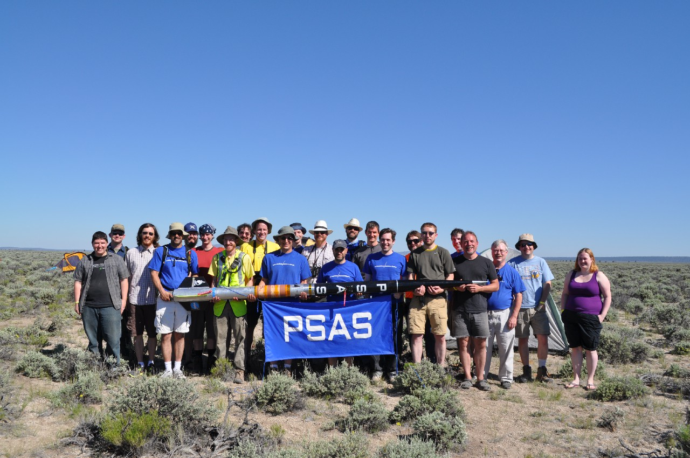
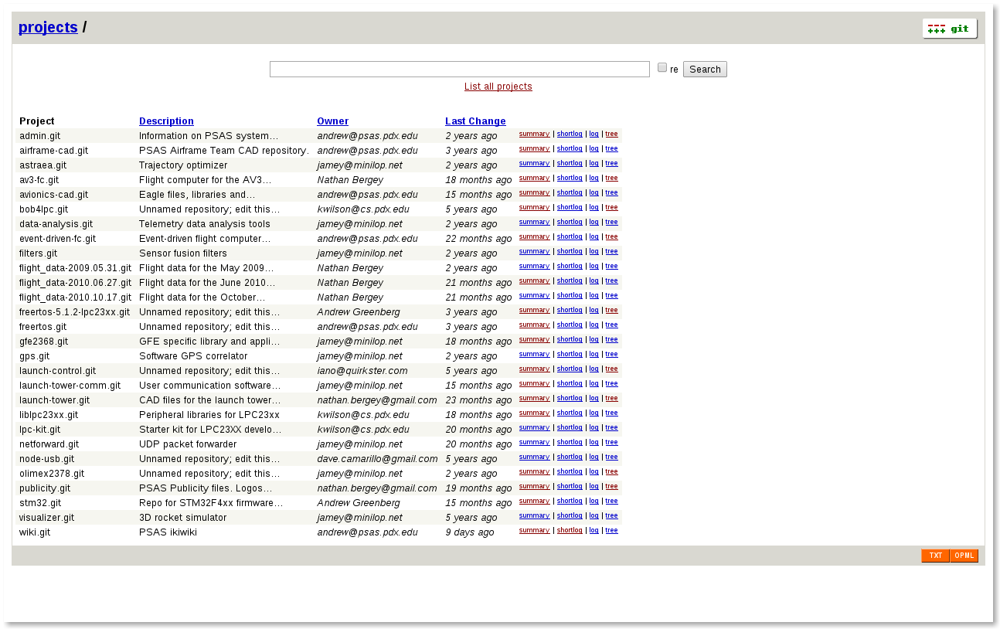

Rocket Science On Github
Open Source Bridge 2014
PSAS
Aerospace project at PSU. Open to everyone!
Why Rockets?
- Labs are safe and predictable.
- Rockets can kill you! And are hard!
- Okay, so let's build rockets.
- Our goal: Put a 1 kg nanosatellite into orbit.
Plan Of Attack
- Build steerable rocket.
- Get lawyers.
- ???
- Orbit!
An aside about rocket physics...
In The Beginning
git web
Capstones
- Introduce students to large git based development
- They make their own organization
- PSAS forks the project
Test Data
- 100's of MB
- It shouldn't really ever change
- Pare down to minimum needed for analysis
- Don't check in artifacts
- Notes in README about what code and hardware was tested
Rise of the Issue Tracker
- Multiple repos, multiple issue lists
- Can't crosslink (automatically)
- Everyone is confused all the time about where issues live
Full Stack
- github.com/psas
- Top Level Readmes
- Software
- RTD
- travis-ci
- Make files: immediate satisfaction
- EE CAD
- Better visibility
- Missing tools
- Solidworks
Secret Weapons
- Github ecosystem
- Badges!
- RTD
- gh-pages
- Forks
- Visibility
- Issue tracking
Missing Pieces
- Top down visibility
- Connecting repos
- CAD tools
What People Like
- Easy administration
- Badges
- Fitting in
Not So Much
- Email alerts on by default
- Where is blank?
- "You don't update the website anymore"